Birds of Desert National Park: A Symphony of Feathers in the Arid Skies
Desert National Park in Rajasthan, India, is a unique and captivating destination for birdwatching
enthusiasts. This arid and seemingly desolate landscape, covering approximately 3,162 square kilometers,
offers a surprising diversity of avian life. Birding in Desert National Park can be a rewarding experience,
with numerous subheadings that provide insight into this fascinating ornithological haven.
Birds photo's form radhe's lens
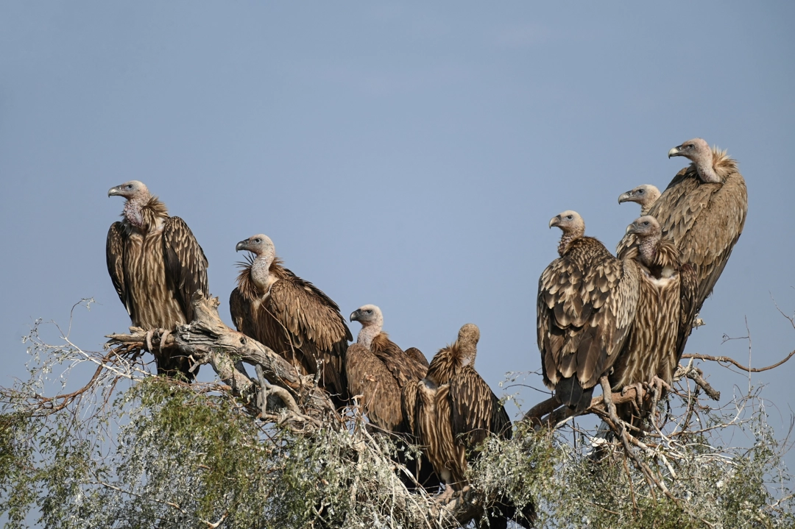
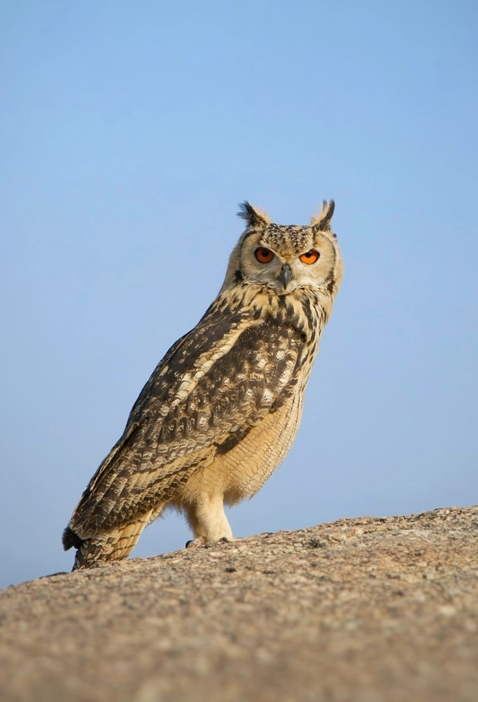
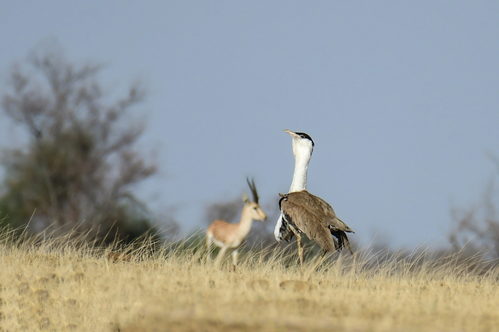
1. Arid Avian Oasis
Despite its harsh desert environment, Desert National Park serves as a vital refuge for a wide variety of
bird
species. The park's diverse ecosystems, including sand dunes, rocky terrain, and thorn scrub, attract a
wealth
of avian life. Birders visiting this region can expect to encounter both resident and migratory species,
making it a
year-round destination for birdwatching.
2. Migratory Marvels
One of the most remarkable aspects of Desert National Park is its role as a critical stopover for
migratory birds
along the Central Asian Flyway. During the winter months, the park becomes a temporary home to thousands
of
migratory species. Among the notable visitors are Demoiselle Cranes and various waterfowl species, making
the park a
spectacle of avian diversity.
3. Iconic Endemics
Desert National Park boasts several bird species that are endemic to this region, making it a must-visit
for serious
birdwatchers. The Great Indian Bustard and the Indian Courser are two iconic endemics found here. Their
survival in
this harsh desert landscape underscores the park's importance for the conservation of these unique
species.
4. Varied Habitats
The park's topography offers a range of habitats for birds, from sand dunes and salt flats to saline lakes
and
thorny shrubbery. Each habitat hosts its own set of bird species, making it possible to spot a wide array
of birds
in a single visit. Birdwatchers can explore these diverse ecosystems, each with its own charm and avian
inhabitants.
5. Prime Photographic Opportunities
Bird photography enthusiasts will find Desert National Park an ideal location to capture stunning shots of
avian
life against the backdrop of the desert landscape. The park's unique lighting conditions and the contrast
between
the vibrant plumage of birds and the arid surroundings create remarkable photo opportunities.
6. Conservation Efforts
Desert National Park is not only a sanctuary for birds but also a testament to conservation efforts in
India. The
park's management focuses on preserving the fragile desert ecosystem and protecting its avian inhabitants.
Understanding the conservation initiatives in place can deepen one's appreciation for the park's
significance.
7. Best Birding Seasons
While Desert National Park offers birdwatching opportunities year-round, the best time to visit for
birding is during
the winter months, from November to March. This period coincides with the arrival of migratory birds and
offers
pleasant weather for outdoor activities.
8.Radheshyam: The Expert Birding Guide
When exploring the avian wonders of Desert National Park, there's no better companion than Radheshyam, a
seasoned birding guide with an unrivaled knowledge of the park's birdlife. Radheshyam's expertise in
identifying and locating birds, combined with his passion for conservation, ensures that every birding
expedition with him is both educational and rewarding. Whether you're a novice or an experienced birder,
Radheshyam's guidance enhances the birdwatching experience.
9.Diverse Bird Species
Desert National Park is home to an impressive diversity of bird species, with over 250 documented in the
region. In addition to the iconic Great Indian Bustard and Indian Courser, you'll encounter raptors like
the Short-toed Eagle and Bonelli's Eagle, elegant waterbirds such as the Black-headed Ibis and Eurasian
Spoonbill, and vibrant songbirds like the Indian Golden Oriole and Bluethroat. Each visit to the park
unveils new avian delights, thanks to its diverse ecosystems.
10.Nocturnal Birding Adventures
For those seeking unique birdwatching experiences, Desert National Park offers thrilling nocturnal birding
opportunities. Radheshyam can lead you on nighttime excursions to spot elusive nightjars like Sykes's
Nightjar and Indian Nightjar. These excursions provide a chance to witness the park's avian nightlife and
observe the mysterious behaviors of nocturnal birds.
11.Bird Ringing Programs
Participate in bird ringing programs conducted in collaboration with local conservation organizations.
Radheshyam can facilitate your involvement in these programs, allowing you to learn about bird migration
patterns and contribute to ongoing research efforts. It's a hands-on experience that deepens your
understanding of the park's avian inhabitants.
12.Cultural Insights
Beyond birdwatching, Radheshyam can introduce you to the rich cultural heritage of the region's indigenous
communities. You'll gain insights into the harmonious relationship between these communities and the local
birdlife. Radheshyam's storytelling skills bring to life the cultural significance of birds in the
desert's folklore and traditions.
13.Birding Etiquette and Conservation
With Radheshyam's guidance, you'll not only enjoy exceptional birding but also practice responsible
birdwatching. He emphasizes the importance of birding etiquette, such as maintaining a respectful distance
from nesting sites and minimizing disturbances to birds. Radheshyam is dedicated to instilling a sense of
responsibility for bird conservation in every visitor he guides.
14.The Joy of Bird Calls
Birding in Desert National Park isn't just about sightings; it's also about the symphony of bird calls
that fills the air. Radheshyam's keen ear can decipher the melodious calls of various species, enhancing
your birdwatching experience. From the resonant calls of the Indian Peafowl to the haunting songs of the
Oriental Turtle Dove, you'll develop an appreciation for the auditory delights of birding.
In conclusion, Desert National Park offers an enchanting world of birds waiting to be discovered. With
Radheshyam as your guide, you'll embark on a birdwatching journey that combines expertise, conservation
awareness, and cultural immersion, making it an unforgettable experience for bird enthusiasts of all levels.
CHECKLIST OF BIRDS
Name Of The Birds
Scientific Name
Status
Great Indian Bustard
Ardeotis nigriceps
Critically Endangered
Asian Houbara/Macqueen Bustard
Chlamydotis macqueenii
Vulnerable
Cream Coloured Courser
Cursorius cursor
Uncommon
Tawny Eagle
Aquila rapax
Uncommon
Eastern Imperial Eagle
Aquila heliaca
Vulnerable
Booted Eagle
Hieraaetus pennatus
Uncommon
Bonelli's Eagle
Aquila fasciata
Uncommon
Greater Spotted Eagle
Aquila clanga
Vulnerable
Indian Spotted Eagle
Clanga hastata
Vulnerable
Short-toed Snake Eagle
Circaetus gallicus
Common
Red Headed Vulture
Sarcogyps calvus
Critically Endangered
White Rumped Vulture
Gyps bengalensis
Critically Endangered
Indian Vulture/Long Billed Vulture
Gyps indicus
Critically Endangered
Egyptian Vulture
Neophron percnopterus
Endangered
Eurasian Griffon Vulture
Gyps fulvus
Uncommon
Himalayan Vulture
Gyps himalayensis
Near Threatened
Cinereous Vulture
Aegypius monachus
Near Threatened
Laggar Falcon
Falco jugger
Uncommon
Red Necked Falcon
Falco chicquera
Common
Merlin
Falco columbarius
Uncommon
Eurasian Sparrowhawk
Accipiter nisus
Common
Sikara
Accipiter badius
Common
Demoiselle Crane
Grus virgo
Common
Common Crane
Grus grus
Common
Long Legged Buzzard
Buteo rufinus
Common
White Eyed Buzzard
Butastur teesa
Common
Common Buzzard
Buteo buteo
Common
Montagu's Harrier
Circus pygargus
Uncommon
Pallid Harrier
Circus macrourus
Near Threatened
Marsh Harrier
Circus aeruginosus
Common
Eurasian Eagle-Owl
Bubo bubo
Common
Short-Eared Owl
Asio flammeus
Common
Barn Owl
Tyto alba
Common
Spotted Owlet
Athene brama
Common
Indian Courser
Cursorius coromandelicus
Common
Sociable Lapwing
Vanellus gregarius
Critically Endangered
White Tailed Lapwing
Vanellus leucurus
Uncommon
Red Wattled Lapwing
Vanellus indicus
Common
Indian Thick-Knee
Burhinus indicus
Common
Radheshyam's Birding Wisdom: When you embark on a birdwatching adventure in Desert
National Park with Radheshyam, you're not just getting a guide; you're getting a treasure trove of
knowledge. Radheshyam's ability to decipher the nuanced behaviors of birds is unmatched. He can tell you
when a raptor is about to take flight or when a songbird is preparing to serenade the desert dawn.
The Dance of the Demoiselle Cranes: In the winter months, the skies over Desert National
Park are filled with the elegant flight of Demoiselle Cranes. These migratory birds, with their delicate
plumage, descend upon the park's wetlands in large numbers. Radheshyam can lead you to the perfect vantage
point to witness their mesmerizing courtship dance, a spectacle that's both romantic and awe-inspiring.
Birding in the Twilight Hours: Radheshyam's secret to spotting elusive birds lies in the
twilight hours. As the sun sets over the dunes, he knows precisely where to look for nightjars like the
Sykes's Nightjar and Indian Nightjar. With his guidance, you'll witness these nocturnal wonders as they
come to life under the desert moonlight.
The Call of the Indian Peafowl: One of the most iconic sounds of the park is the resonant
call of the Indian Peafowl, often referred to as the Peacock. Radheshyam can regale you with tales of the
Peacock's role in local folklore and its significance in Indian culture. When you hear this majestic
bird's call echoing across the dunes, it's an experience that stays with you forever.
The Elusive Indian Courser: Radheshyam's sharp eyes can spot the well-camouflaged Indian
Courser even in the vast expanses of sand. This rare bird is known for its cryptic plumage and shy
demeanor. Radheshyam's tracking skills are so honed that he can lead you to the Indian Courser's hiding
spots, where you can observe its unique behaviors.
Birding as a Conservation Act: With Radheshyam, birding becomes more than just a hobby;
it's a conservation act. He imparts the importance of preserving these fragile desert ecosystems and their
feathered residents. Radheshyam's commitment to environmental education inspires birdwatchers to become
advocates for the park's conservation efforts.
The Art of Bird Language: Radheshyam has an extraordinary ability to teach you the
language of birds. He can help you distinguish between the melodious calls of the Indian Golden Oriole and
the subtle chirps of the Scaly-breasted Munia. Understanding bird language adds depth to your birdwatching
experience.
Birding and Beyond: Birdwatching in Desert National Park isn't just about birds; it's an
immersive experience that connects you with the broader ecosystem. Radheshyam introduces you to the
desert's flora, its reptiles, and even its nomadic tribes. His storytelling brings to life the intricate
relationships between all these elements and the birds.
Birds photo's from radhe's lens
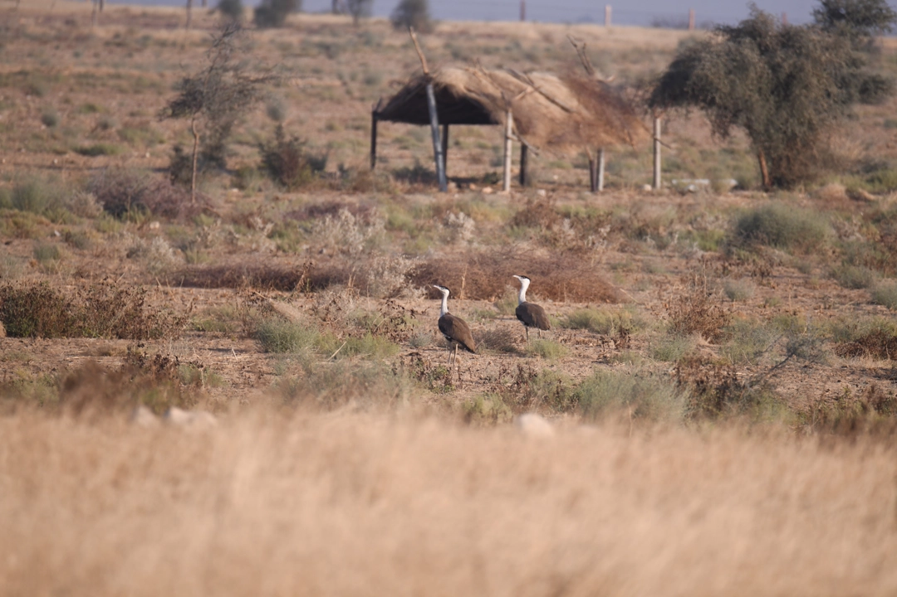
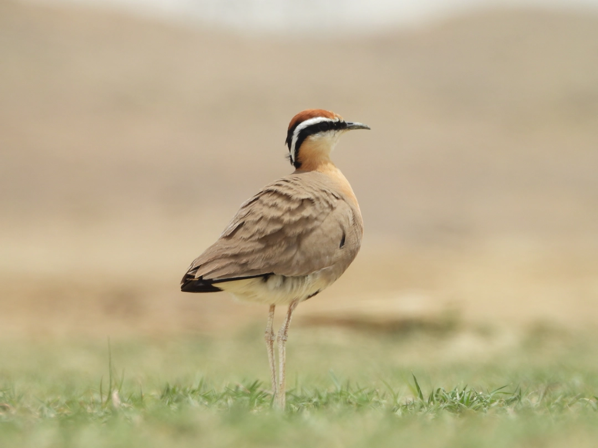
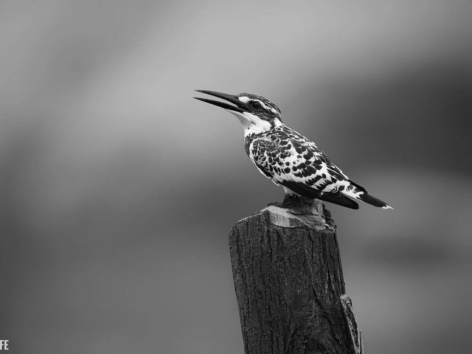
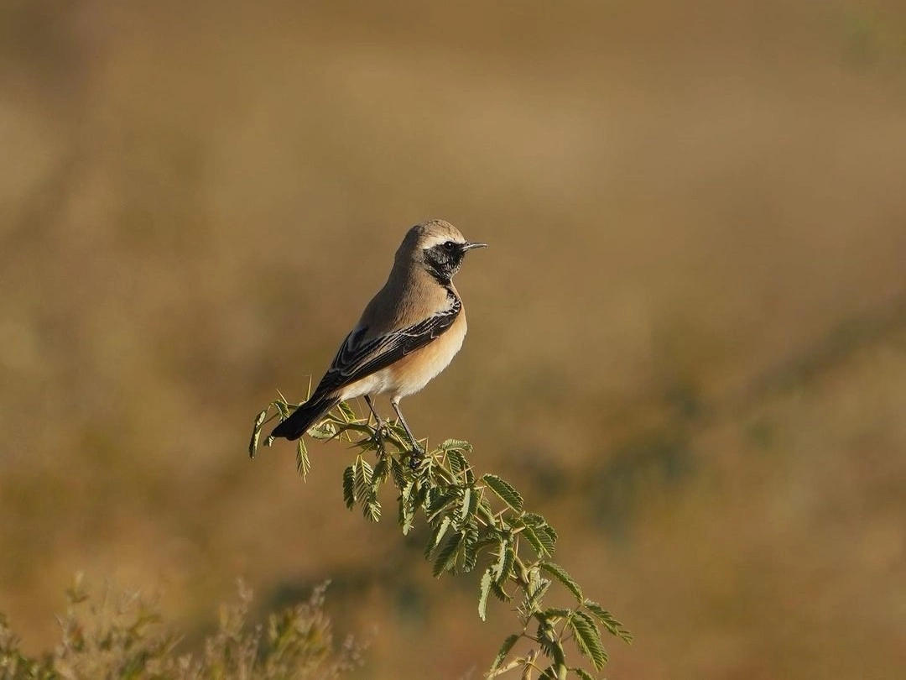
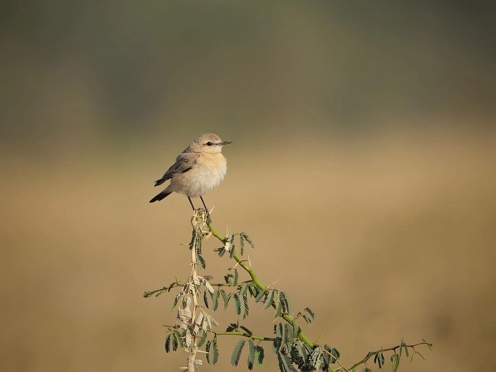
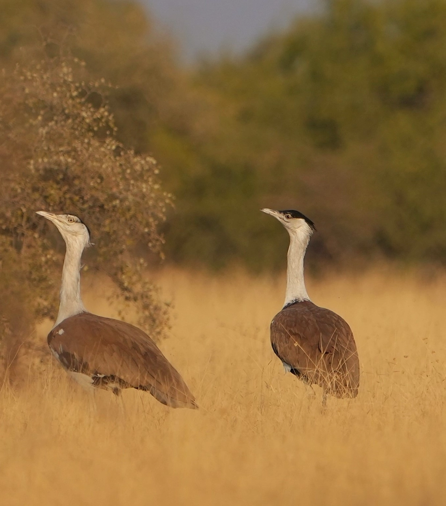
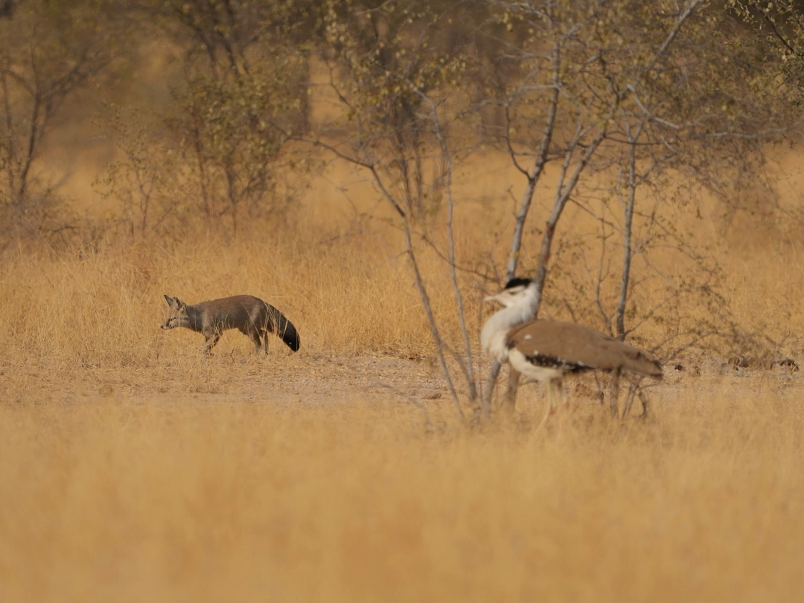
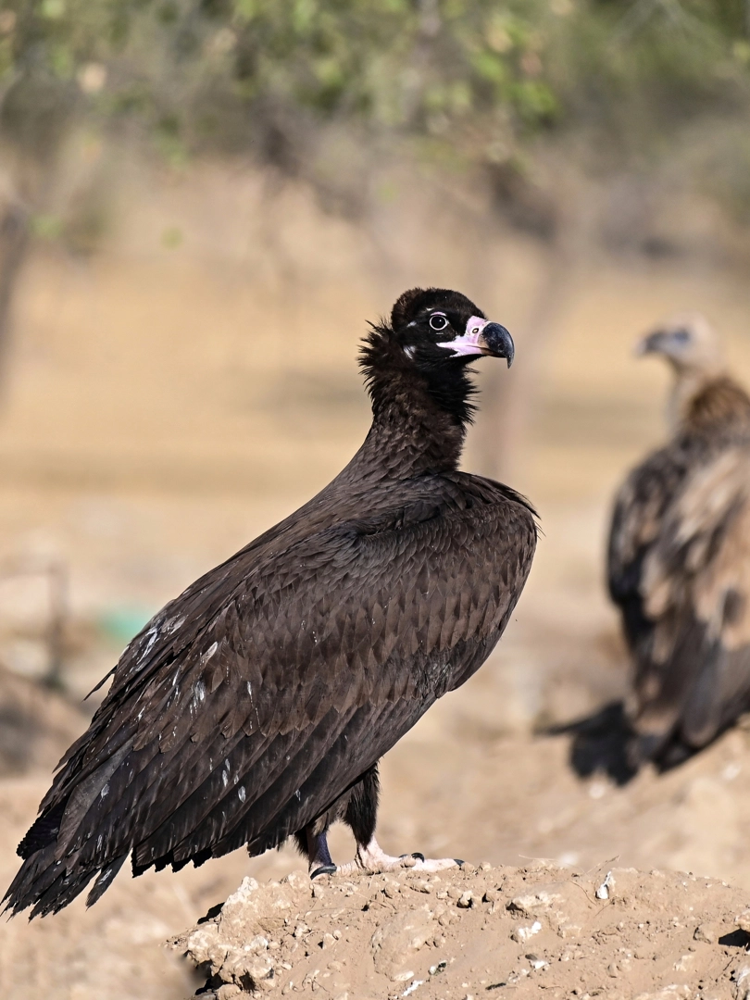
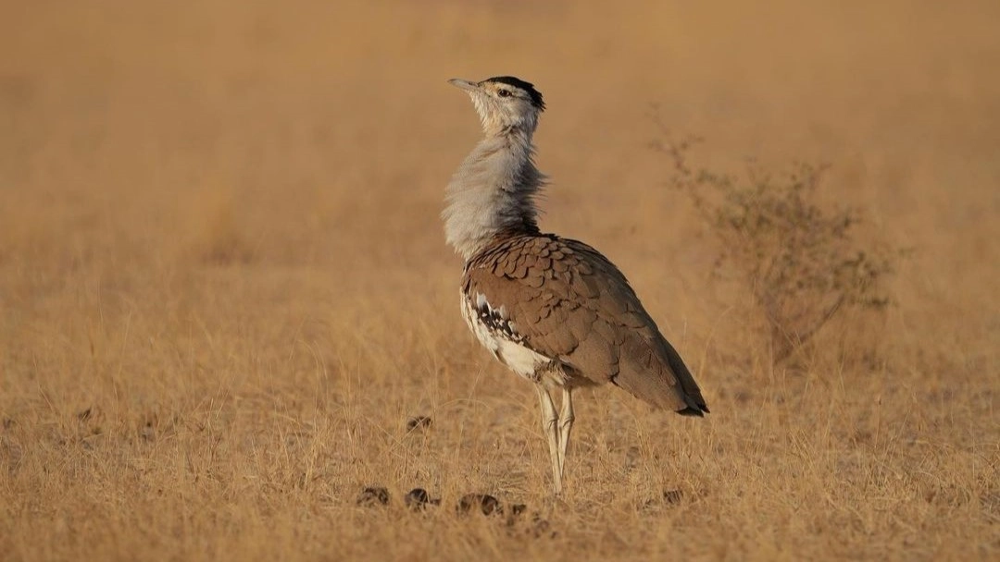
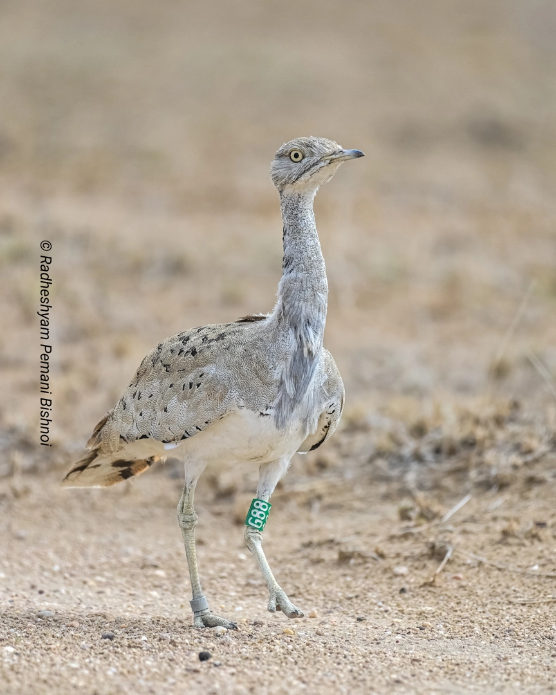
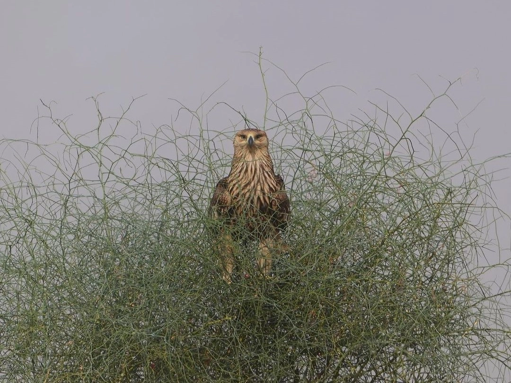
Call To Action
Ready For Unforgatable Travel. Remember Us!
"Prepared to Immerse in Unforgettable Thar Desert Exploration ? Let Your Journey Echo Our Warmth and
Expertise Forever."